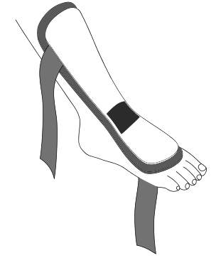

DESIGNED ALONGSIDE SURGEONS TO IMPROVE ACHILLES RUPTURE RECOVERY.

Achilles Rupture Night Splint
Buy on AmazonThe ONLY splint for post Achilles rupture recovery. Aimed to improve sleep and make recovery more comfortable.

Simply brilliant - and brilliantly simple
Clinical Director, London Foot and Ankle Centre
Currently, patients wear a large, outdoor, orthopaedic boot, day and night, for the 10 week rehabillitation. This is analagous to wearing hiking boots for 10 weeks, and sleeping in them...
Patients find these boots:

Hot
Dirty
Uncomfortable
Heavy
78% of patients found sleeping in the boot difficult and would therefore benefit from our night splint.


By sleeping and resting in a lightweight, comfort-focused splint, recovery becomes more bearable.

Cool
Contoured
Lightweight
Slim-line
DO NOT STAND OR WALK IN THE SPLINT.
DO NOT OVERTIGHTEN THE STRAPS.
1. Point toes then place shell on leg. Ensure you cover foot but not toes. Fastening patch sits over ankle joint.
2. Lightly do up the leg and foot straps.
3. Position heel in hole of the final strap.
4. Gently fasten.


“I recently began using the Thetis Night Splint overnight. My regular boot is good for daily use but very heavy and uncomfortable to sleep in - the night splint has been revolutionary for me! It keeps my foot perfectly in place but without being bulky, meaning I can sleep more comfortably with no fear of hurting my Achilles tendon. I would highly recommend everyone and anyone to use this product during your recovery from Achilles rupture.”
“The Thetis Night Splint is a lot slimmer and far more lightweight than the orthopaedic boot I was sleeping in. It allows me to move my leg more freely but still stops me from flexing my toes beyond a certain point, which is ideal whilst the tendon heals. The splint even comes in my favourite colour, so I was sold the minute I saw it!”

“When I tore my own Achilles tendon, the hardest part of the recovery was having to wear the hospital boot in bed at night for many weeks. My only option was to make myself a splint using plaster-cast materials and make-shift straps. It is fantastic that Thetis Medical have produced this night-splint. It is certain to improve the recovery experience for patients.”